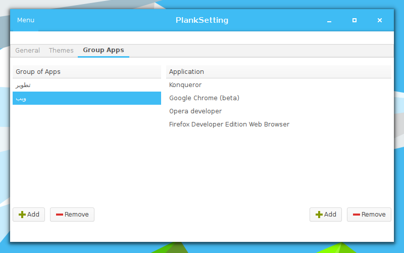
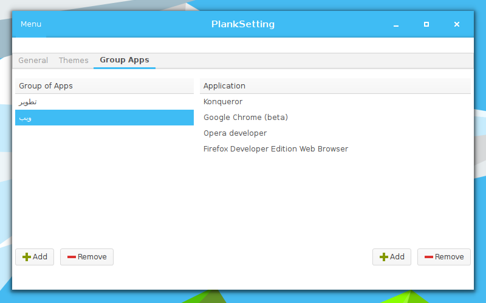
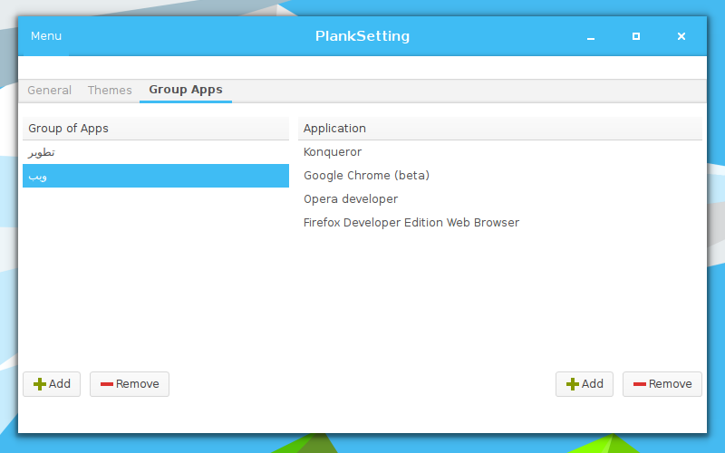

PlankSetting v0.1.3
A simple application that allow users to customize plank dock easily.
Download from Github.com
Download from GTK-App.org


Screenshots:

 

A simple application that allow users to customize plank dock easily.



A simple application that allow users to customize plank dock easily.
Customizing the behavior of the dock.
Changing the dock theme.
Adding new themes.
Removing the undesirable themes.
Group Applications in categories
You need Plank to be installed first.
to install PlanKsetting, You should
Plank 0.6.0
Gtk 3.x
Python 3.x
unzip & unrar programs
you can do that by:
sudo apt-get install unrar unzip python3 libgtk-3-0
sudo pacman -S unrar unzip python3 gtk3
sudo zypper install unrar unzip python3 gtk3
sudo yum install unrar unzip python3 gtk3
Type in de command line:
wget https://github.com/karim88/PlankSetting/archive/master.zip
unzip master.zip cd PlankSetting-master/
sudo ./install.sh
if you wish to uninstall PlankSetting, type in terminal:
cd PlankSetting-master/
chmod +x uninstall.sh
sudo ./uninstall.sh
If you wish to contribute in translation of PlankSetting you can do that here.
the project is already available in:
Arabic
English
French
Lithuanian
Karim Oulad Chalha Authors & Arabic, French translator.
Moo Lithuanian translator.
Having trouble with Project page or the application please report it here
Ohhh I forget, That whould be nice to tell me what you think of the application ?!?
Have Fun (^_^)